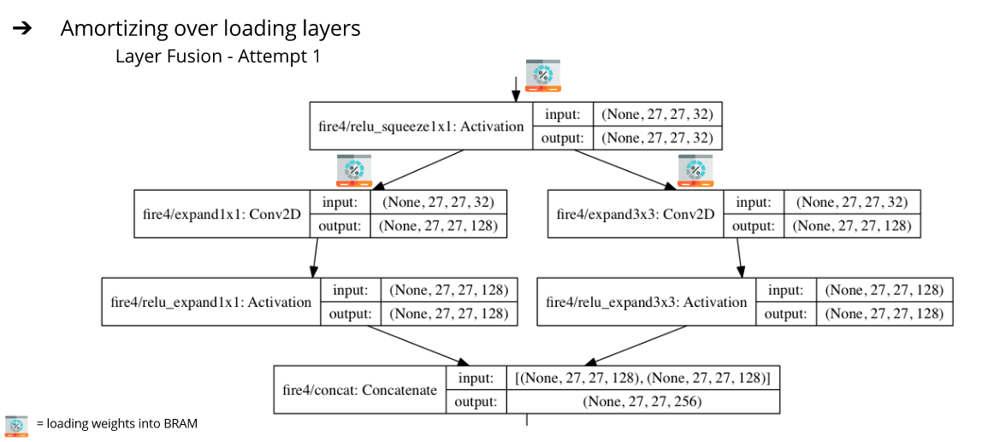
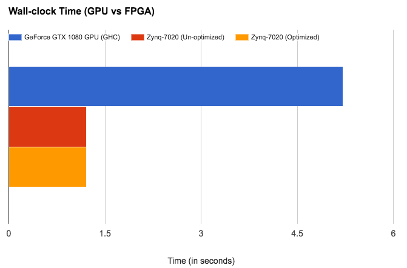

Project Summary
We have successfully been able to accelerate the SqueezeNet on Zybo Zynq-7020 FPGA. Our implementation (when evaluated using the ILSVRC2012 ImageNet data) is faster and more energy efficient as compared to our baseline!
by Megha Arora and Samyukta Lanka.
We have successfully been able to accelerate the SqueezeNet on Zybo Zynq-7020 FPGA. Our implementation (when evaluated using the ILSVRC2012 ImageNet data) is faster and more energy efficient as compared to our baseline!
We obtained the trained weights from the original Caffe model provided by the authors of SqueezeNet. However, we did not have an existing code-base for the FPGA implementation to build upon.
We store weights and image data on the DRAM in the FPGA. For each layer computation, the weights are loaded into the BRAM along with the input data for that layer. There are several ways we could do this! We optimized our access and storage patterns for maximal data reuse. We also ensured that our approach incorporates producer-consumer locality by fusing multiple layers together. As a first attempt (we call it Layer Fusion 1), instead of loading the squeeze and the two expand layers separately on the FPGA, we load the layer settings at once. Essentially, this brings down the number of layers in our network from 18 to 10. We perform computations on a batch of images at a time to amortize over loading layer settings and weights time.

We tried to improve performance of our convolutions via pipelining, loop unrolling and flattening, but it didn't help because we are bandwidth bound, so making our compute faster won't have an impact.
Another optimization (we call it Layer Fusion 2) that we attempted was fusing convolution and max-pool layers. Originally, we performed a convolution (and ReLU), the output was written back, and then loaded again to perform a max-pool. By fusing these layers, we were able to max-pool right after performing the convolution on a smaller chunks, thus improving producer-consumer locality.
These are estimates generated using the HLS Synthesis tool specific to SqueezeNetv1.1. This shows the ideal decrease in the total number of clock cycles required for the entire SqueezeNet workload. After pipelining, loop flattening and unrolling, we only need 2% of the total clock cycles we need otherwise (without any of the optimizations)! Seems like an efficient implementation, right? We don't see this improvement once we put the SqueezeNet on the FPGA. :(
We get a speedup of around 4.31x as compared to the GPU baseline. The implementation represented by the red bar includes Layer Fusion 1 (amortizing over loading layers), maximizing consumer-producer locality, input reuse and making access patterns efficient! As is evident, any of the optimizations for convolutions i.e. pipelining and loop unrolling (represented by the yellow bar) did not help us run any faster as we are memory bandwidth bound on the FPGA!
We also tried several HLS enables optimization by using directives like ARRAY_PARTITION, RESOURCE, FUNCTION_INSTANTIATE, etc. After Layer Fusion 2 and these HLS enabled optimizations, we get a net speedup of around 4.96x as compared to the GPU baseline. Also, note that our accuracy is exactly the same as the output from our baseline for the 1000 images as we use the exact same weights and perform the same computation (just more efficiently)!
These estimates are generated using the HLS Synthesis tool specifically for SqueezeNet v1.1. Our BRAM utilization is high! We are also using compute resources well. We mainly care about BRAM here due to the nature of our workload.
These are the power measurements for the SqueezeNet FPGA Accelerator when synthesized for Zybo Zynq-7020 FPGA as compared to the GPU baseline. FPGA estimations have been obtained using the Xilinx Power Estimator (XCE) tool and the GPU measurements using the nvidia-smi interface. Our implementation is significantly more energy efficient which is inline with what we have learnt about hardware specialization from this class!
According to a quick test synthesis with Vivado HLS, there is a potential to save 50% of the BRAMs and 80% of the DSP slices if we use a 16-bit fixed-point data format as compared to the current 32-bit representation.
We will accelerate SqueezeNet (a CNN variant) on an FPGA
We chose DNNs because they are revolutionizing many areas of computing today and there is parallelism that the underlying model possesses. The sequence of multiply/add operations (like FMA) to calculate the input to each layer in the network are highly parallelizable. In particular, there are multiple axis of parallelism we plan to explore -
An extremely popular DNN is Covolutional Neural Network(CNN) which is extensively used in the domain of computer vision. SqueezeNet was created to combat the large number of parameters required for CNNs. Based on AlexNet , the purpose was to reduce the memory required without losing accuracy. We will be accelerating SqueezeNet (architecture on right) on the Zybo Zynq-7020 FPGA.

All the different levels of parallelism vary drastically and will be traded off against each other. Some are more prominent in the problem as compared to others. Varying amount of effort and benefit is involved in each, which would require extensive amount of platform knowledge (FPGA in this case) and testing multiple implementations! Deciding which one to prioritize at what cost will be challenging! Also, some types of parallelism may not be suitable for us to implement on the FPGA depending on the design (eg: exploiting bit-level parallelism on FPGA).
One of the major challenges that we will be dealing with is being memory bound on the FPGA. The specific device that we have has 256 KB of on-chip memory with options for external memory. The size of SqueezeNet is much larger than this and it would be difficult to fit the model on the chip. This means we will also have to ensure data locality and reuse.
We will use the Zybo Zynq-7020 FPGA for this task. We do not have a codebase to refer to; the initial FPGA implementation will be our first goal. We will be referring to the following implementations/papers extensively -
General purpose processors fail to fully exploit the parallelism inherent in DNNs. For instance it can take upto 3 weeks to train a 22 layer CNN for image classification (ImageNet) using 1 NVIDIA K20 GPU. The drawback of using an ASIC neurocomputer for this task also has its own challenges. First, devices that work on special applications always lag behind the mass-produced devices in terms of innovation. Given the variability in ANN architectures, the ASIC neurocomputer cannot be extended to many different architectures without involving significant cost!
FPGAs on the other hand offer the best balance of cost:performance and flexibility for this domain as compared to ASIC neurocomputers or state-of-the-art multi-purpose processors. Essentially, they can be used as ‘semi-custom’ machines for neural networks.
| Date | Milestone |
|---|---|
| April 10 | Proposal |
| April 16 | Convolutions and Max Pooling Layers Working Separately on FPGA |
| April 23 | SqueezeNet Working on FPGA |
| April 30 | Acceleration + Optimizations |
| May 7 | Benchmarking |
| May 11 | Result Collation + Report Writing |